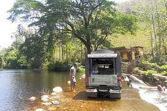
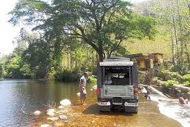

Pathanamthitta is a municipality situated in the Central Travancore region in the state of Kerala, India, spread over an area of 23.50 km2. It is the administrative capital of Pathanamthitta district. The town has a population of 37,538. The Hindu pilgrim centre Sabarimala is situated in the Pathanamthitta district; as the main transport hub to Sabarimala, the town is known as the 'Pilgrim Capital of Kerala'.[3] Pathanamthitta District, the thirteenth revenue district of the State of Kerala, was formed with effect from 1 November 1982 vide G.O. (M.S) No.1026/82/RD dated 29 October 1982, with headquarters at Pathanamthitta. Forest covers more than half (1396.95 km2.) of the total area of the District. Pathanamthitta District ranks the 7th in area (2652 sq. km.) in the State.
MORE ABOUT